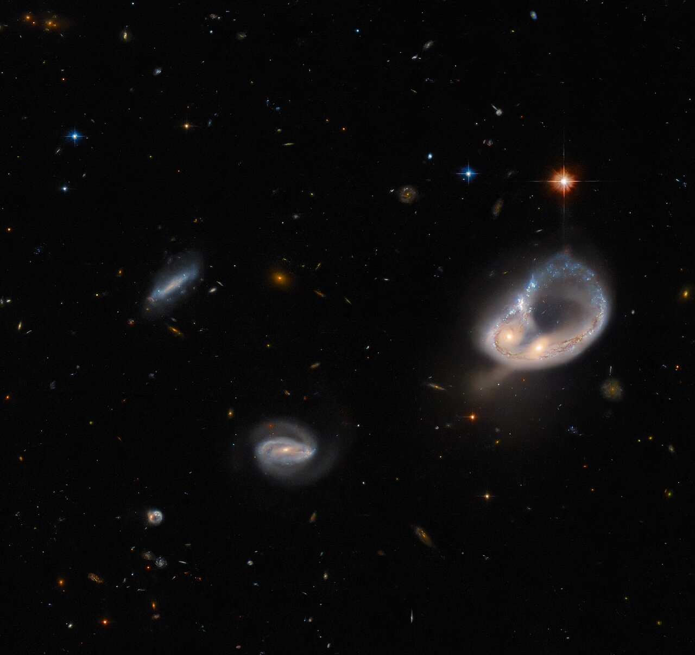

Astronomy
one of the oldest sciences Astronomy is the scientific study of celestial objects (such as stars, planets, comets, nebulae, star clusters and galaxies) and phenomena that originate outside the Earth’s atmosphere (such as the cosmic background radiation). It is concerned with the evolution, physics, chemistry, meteorology, and motion of celestial objects, as well as the formation and development of the universe.